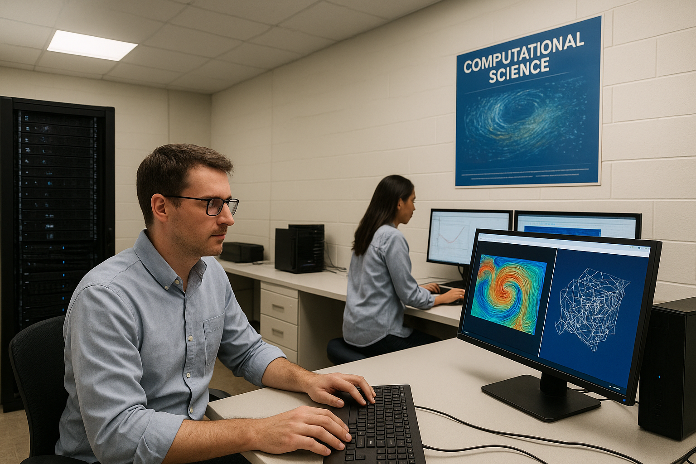
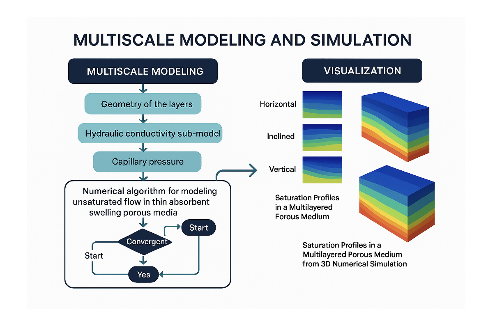
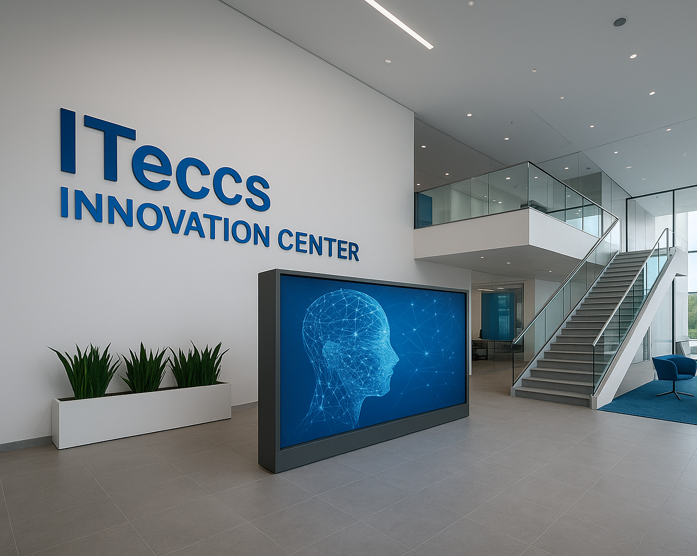
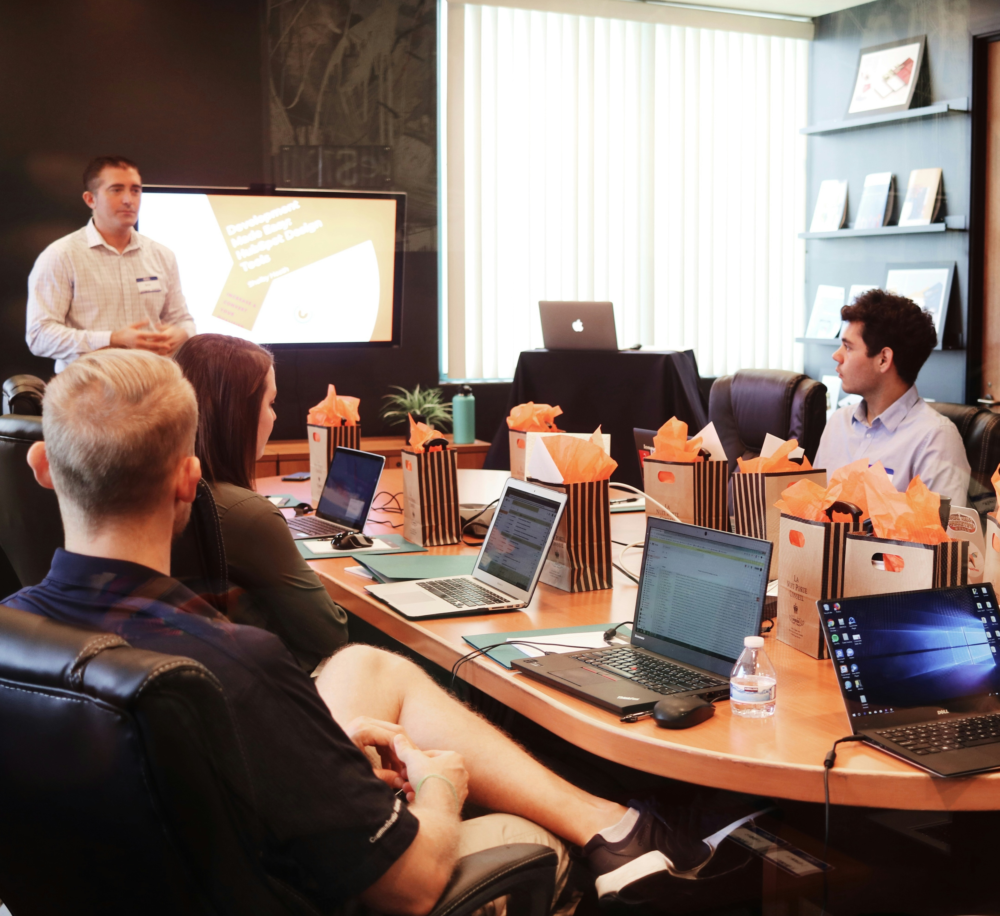

ITECCS Research Center
The ITECCS Research Center provides internationally recognized expertise at the intersection of applied mathematics,
artificial intelligence, scientific computing, and advanced engineering simulation. Under the leadership of senior academic and
scientific experts, ITECCS collaborates with universities, industry leaders, research institutions, startups, and government
agencies to address complex scientific and technological challenges.
Our mission is to transform rigorous mathematical theory into deployable computational solutions that accelerate innovation,
enhance engineering performance, enable biomedical advances, and support strategic decision-making in science and technology.
For a complete view of ITECCS’s research portfolio—including core themes, flagship initiatives, and active collaborations—visit our Research & Innovation Programs page.
Scientific Computing, AI, and Computational Modeling
Development of advanced simulation frameworks, AI-enhanced modeling, inverse problem solutions, and high-fidelity computational systems.
Advanced Applied Mathematics and Algorithm Development
Expertise in PDE modeling, numerical methods, optimization, inverse problems, and multiscale simulation for complex scientific and engineering systems.
Technology Innovation and Research Translation
Translating fundamental research into deployable computational technologies, enabling next-generation solutions across engineering, healthcare, energy, and advanced technology sectors.
Scientific Computing & HPC Advisory
Advisory in high-performance computing, scalable simulation, GPU acceleration, and advanced numerical methods for large-scale scientific and engineering applications.
Engineering Simulation & Mathematical Modeling
Advanced modeling of multiphysics systems, fluid dynamics, porous media, and complex engineering processes using state-of-the-art computational methods.
AI, Machine Learning & Scientific Data Analysis
AI-driven modeling, inverse methods, predictive analytics, and scientific machine learning to enable intelligent decision-making and technological innovation.
Technical Advisory & Strategic Research Collaboration
Strategic technical advisory, research program development, grant collaboration, and scientific leadership supporting academic, industrial, and governmental innovation.
Technical Advisory in Action
Advancing science, engineering, and technology through applied mathematics, AI-driven innovation, and scientific computing expertise.




